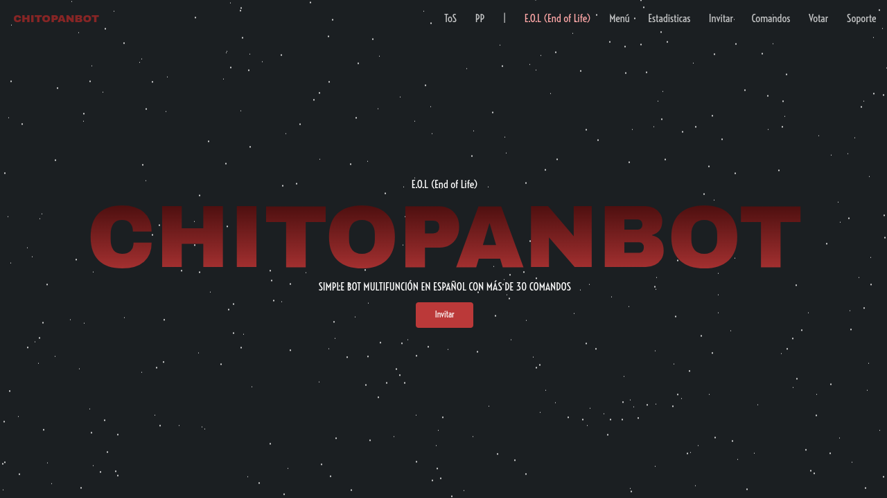
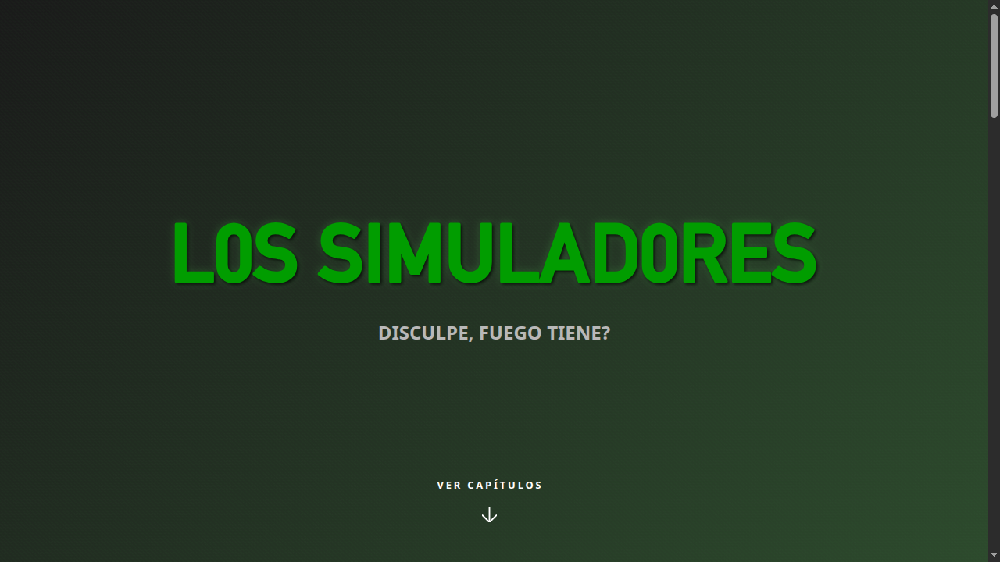

¡Hola! Me llamo Francisco, pero me dicen Pancho. Soy un pibe de Buenos Aires, Argentina, que en su tiempo libre, como hobby y pasión, se dedica a programar.
La programación es una de mis pasiones, la descubrí hace mucho tiempo y comencé a explotarla hace más de cinco años. Podés ver algunos de mis proyectos acá o en mi perfil de GitHub.
Proyecto Personal
Proyecto Personal
Trabajo Profesional
API REST
Sistema de gestión de inventario para depósitos diseñado con DDD y principios SOLID. Permite realizar conteos cíclicos, registrar ingresos y egresos de mercadería, y mantener un control preciso del stock. Documentado con Swagger, ejecutado en Docker.
API REST
Sistema de ventas multi-rol con manejo de órdenes, despachos y tareas. Cada tipo de usuario (vendedor, administrador, empleado) cumple un rol distinto en el flujo. Incluye registro de cambios para reconstruir órdenes en cualquier fecha, sincronización offline automática al recuperar conexión, autenticación JWT, notificaciones en tiempo real con Socket.io y documentación con Docusaurus.
Servidor web
Simple servidor web en node.js con soporte para ssl. Hostea de manera completa tus páginas webs en cualquier servicio que soporte node.js sin limitaciones.
API REST
API que recopila información de diversas monedas y las unifica en una sola respuesta para evitar realizar demasiadas solicitudes. Genera un registro histórico de los valores.
Mensajería
Sistema de mensajería instantánea & temporal que funciona mediante un Websocket en NodeJS + PHP y MySQL para el sistema de sesiones y perfiles.
Streaming
Script que maneja 10 bots de Twitch que transmiten Los Simpsons las 24 horas mediante un sistema de horarios, con una API integrada para extraer información de capítulos y bots.
API REST
Diseñada para reemplazar una API obsoleta. Almacena datos de ChitoPanBOT para tener un registro histórico consultable por rangos de fechas o dataPoints.
Librería npm
Librería para el comando avatar en bots de Discord escritos en discord.js. Crea el comando avatar de manera simple, ideal para novatos.
Actualmente tengo 2 bots de discord que puedes usar de manera gratuita en tu servidor de discord. Si tienes problemas con alguno, por favor informalo en el servidor de soporte.
Multifunción
Bot de discord multifunción en español. Escuchá música sin limitaciones, roleá de manera simple, moderá de forma básica y reproducí radios argentinas en tu servidor.
Música
Bot básico para reproducir lofi en tu servidor de discord de manera gratuita.
Sitio web
Página web del bot ChitoPanBOT. Incluye comandos con descripciones, estadísticas (servidores, usuarios, latencia) y enlaces útiles.

Sitio web
Todos los capítulos de Los Simuladores remasterizados con IA a 1080p/720p.

Se diseñó específicamente para reemplazar un API obsoleta/abandonada. Su funcionamiento se basa en almacenar datos de ChitoPanBOT para tener un registro histórico. La API recibe los datos y automáticamente los guarda en una base de datos, devolviendo un registro histórico modificable mediante rangos de fechas o dataPoints.
Ver API en Funcionamiento